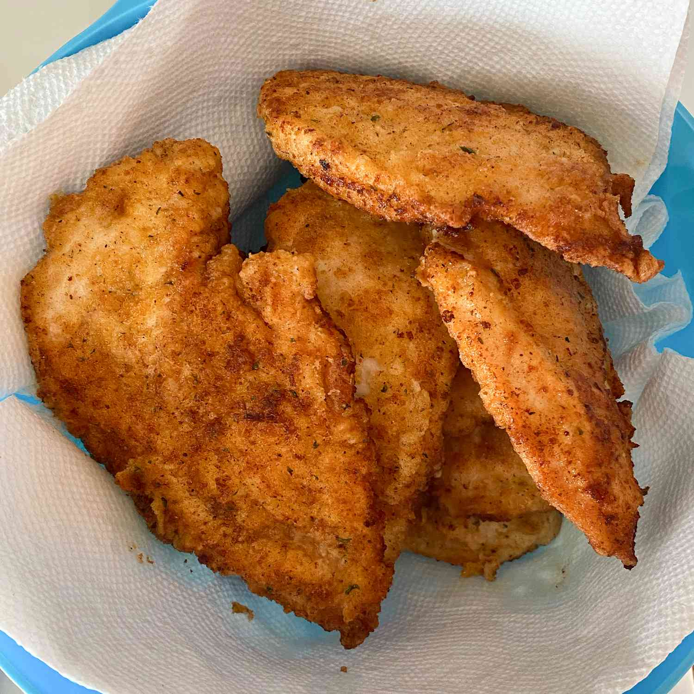

Garlic Friend Chicken

Description
Fried Garlic Chicken is a crispy fried chicken in a thick and savoury garlic sauce;
this dish is most certainly for the garlic lover.
Ingredients
- 2 teaspoons garlic powder, or to taste
- 1 teaspoon ground black pepper
- 1 teaspoon salt
- 1 teaspoon paprika
- 1/2 cup seasoned breadcrumbs
- 1 cup all-purpose flour
- 1/2 cup milk
- 1 egg
- 4 skinless, boneless chicken breast-halves - pounded thin
- 1 cup of oil for frying,or as needed